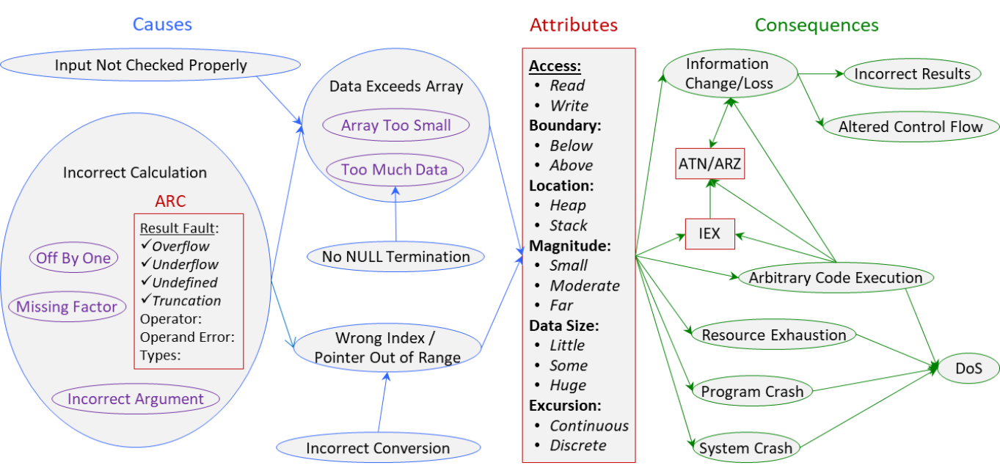

Buffer Overflow (BOF) Class
Definition
We define Buffer Overflow (BOF) as:
The software accesses through an array a memory location that is outside the boundaries
of that array. [1]
Often referred to as a "buffer," an array is a contiguously allocated set of objects [1], called elements. An array has a definite size, that is, a definite number of elements
are allocated to it. The software should not use the array name to access anything
outside the boundary of the allocated elements. The elements are all of the same data
type and are accessed by integer offsets.
If the software can utilize the array name (more generally, array handle) to access
any memory other than the allocated objects, it falls into this class.
Type
Low-level (language related).
Taxonomy
Fig. 1 depicts BOF causes, attributes and consequences.

Fig 1.
Buffer Overflow (BOF) Class
- click on image for detailed view.
Attributes
This is the access operation causing buffer overflow.
This indicated which end of the array is violated.
This indicates what part of memory the array is allocated in.
Magnitude - Small, Moderate, Far.
This indicates how far outside the boundary the violation extends – one to a few bytes;
eight to dozens bytes; or hundreds, thousands or more bytes.
Data Size - Little, Some, Huge.
This indicates how much data is accessed beyond the boundary.
Excursion - Continuous, Discrete.
This indicates whether the violating access was preceded by consecutive accesses of
elements within the array (continuous) or the violation was just accessing outside
of the array (discrete).
Any of the attributes may be "any," "don't care" or "unknown." For example, strict
bounds checking is equally effective regardless of the location, magnitude, data size
or excursion of the violation. Keeping return addresses in a separate stack helps
prevent problems occurring from write accesses when the array location is the stack.
Causes
In the graph of causes, Data Exceeds Array may be caused by an Input [that is] Not Checked Properly or by an Incorrect Calculation. The specific cases of Data Exceeds Array are Array Too Small and Too Much Data. Too Much Data may be caused by No NULL Termination. Wrong Index [or] Pointer Out of Range may be caused by Incorrect Calculation, too, or by an Incorrect Conversion.
The specific cases of Incorrect Calculation are Missing Factor, Incorrect Argument, Off By One, Integer Coercion, Integer Overflow, Wrap-around and Integer Underflow.
Array Too Small indicates the array was allocated smaller than it should have been. This may occur
because the programmer leaves out a factor, like the size of a header, uses the wrong
variable, or forgets room for a null to terminate a string.
Too Much Data indicates more data is accessed than was anticipated. This may occur because the
string is not NULL terminated or the amount of data is calculated differently than
the size of the buffer (e.g. Heartbleed).
Exposition: When we examine code, we can say in some cases that the programmer allocated
the array too small, such as in CVE-2015-0235 - Ghost. The code computes the size
of a buffer needed, but leaves out one factor, which makes the buffer four bytes short.
In other cases, too much data was accessed, such as in CVE-2014-0160 - Heartbleed.
A string was stored in an array, but instead of computing the length of the string,
the code used a length from the input, which was not checked against the string. This
can cause the code to read far more from the buffer than was allocated. In both cases,
the size of the data exceeds the size of the array. Just looking at the code, it may
be difficult to determine which case it is - it needs semantic content. That's why
the two are sub-causes of one cause.
Consequences
The graph of consequences shows what could happen due to the fault. Resource Exhaustion refers to Memory and CPU.
Sites
BOF may occur at the use of [ ] or the use of unary * operator with arrays in the C language. Sites also include the use of many string
library functions, such as strcpy() or strcat().
Related BF Classes
BF classes related to BOF are: IEX, ATN, <<content to be added>>.
Related CWEs and SFP
CWEs related to BOF are CWE-118, CWE-119, CWE-120, CWE-121, CWE-122, CWE-123, CWE-124, CWE-125, CWE-126, CWE-127, CWE-129, CWE-680, CWE-786, CWE-787, CWE-788, CWE-823.
BF BOF description of these CWEs are provided here.
BF Descriptions of BOF Related CWEs are provided here.
Application
Application examples are provided here.
References